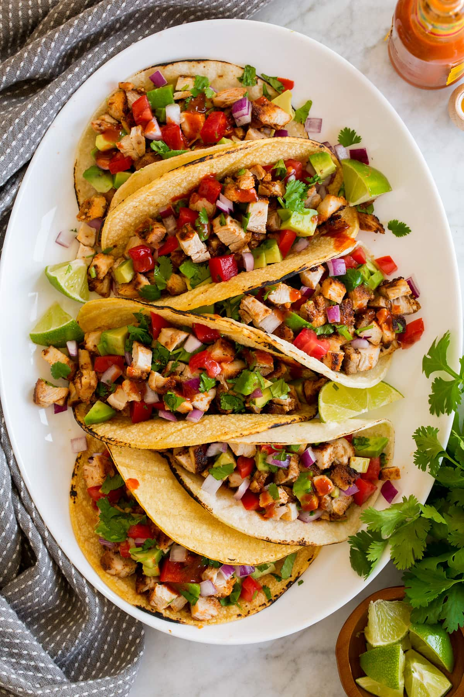

Chicken Tacos

My All-Time Favorite Meal
Mexican-style cuisine is my absolute favorite. I prefer chicken over beef, but either way they are delicious!
Ingredients:
Chicken
- 1 1/2 lbs boneless skinless chicken thigh (trim excess fat)
- 2 tbsp olive oil
- 1 tbs lime juice
- 2 1/2 tsp chili powder
- 1 1/2 tsp ground cumin
- 1 tsp garlic powder
- 1 tsp smoked paprika
- 1/4 tsp cayenne pepper (optional for heat)
- salt and freshly ground black pepper
For Serving
- 10 flour tortillas (warmed)
- 1/4 cup chopped cilantro
- 1/3 cup chopped red onions
- other desired toppings
Steps:
- Place chicken in a medium mixing bowl. Pour over 1 Tbsp olive oil and lime juice.
- Sprinkle with chili powder, cumin, garlic powder, smoked paprika, cayenne pepper and salt and pepper (I use about 1 tsp salt and 3/4 tsp pepper).
- Toss mixture well until evenly coated. At this point you can use right away or marinate in the fridge for up to 8 hours.
- Heat a 12-inch non-stick skillet over medium-high heat. Drizzle in remaining 1 Tbsp olive oil.
- Place chicken in skillet spacing evenly apart. Let cook until browned on bottom, about 6 minutes.
- Turn chicken pieces, reduce heat to medium if needed. Continue to cook until chicken has cooked through (165 degrees in thickest portion), about 6 minutes longer.
- Transfer to a cutting board and let rest a few minutes. Cut into pieces.
- Layer chopped chicken over tortillas, sprinkle with desired toppings and onions and cilantro.
Additonal Topping Ideas
- Pico de gallo or salsa
- Sliced or diced avocaod
- Diced tomatoes
- Grilled corn
- Shredded lettuce
- Shredded cheese